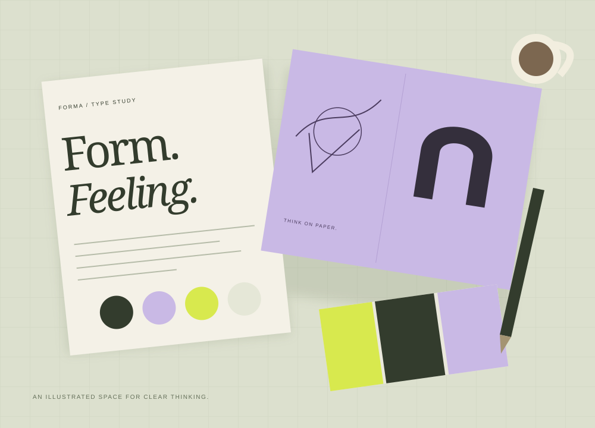

Front-End
- HTML
- CSS
- JavaScript
- UI/UX Design
- Website Designing
ABOUT SYED KAIF ALI
I’m based in Karachi, Pakistan. I enjoy turning an idea into a website people can open, explore and use.
01 / A LITTLE ABOUT ME
LEARNING THROUGH REAL PROJECTS
I’m a student developing my web skills with HTML, CSS and JavaScript. My portfolio includes a team project, UniNest Pakistan, and my personal CareSwitch prototype.
My workflow is AI-assisted: I use tools to help draft and improve code, review the result and test the website. I’m still learning, and I keep the scope of a project clear before starting.
MY SKILLS & TOOLBOX
WHAT I CARE ABOUT
Simple navigation, readable content and a clear next step for visitors.
A layout that adapts to mobile and desktop, with usable forms and buttons.
Review the code, check the details and improve through feedback and practice.
HOW I APPROACH A PROJECT
A small, agreed scope makes it easier to build something useful.
Discuss the pages, content, examples, budget and deadline before agreeing on the work.
Prepare the layout and share a working preview so you can review the direction.
Check navigation, links, forms and mobile layout, then provide the source files and editing notes.
HAVE SOMETHING IN MIND?